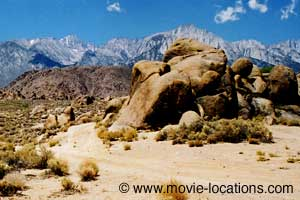
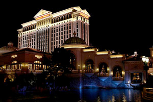

Iron Man location: Tony Stark turns up at the charity ball: Disney Concert Hall, downtown Los Angeles
Iron Man locations range across California and Nevada, as Director Jon Favreau hits the target with the comic book adaptation, teasingly kicking off the Marvel Avengers franchise. Robert Downey Jr effortlessly brings laidback charm and real wit to the character of industrialist Tony Stark.
Iron Man location: Tony Stark is kidnapped in ‘Afghanistan’: Alabama Hills, Lone Pine, California
The landscapes of ‘Kunar Province, Afghanistan’, where Stark is captured after a raid on the army convoy, are the familiar Alabama Hills (nothing to do with the state) at Lone Pine on Route 395, central California. The strange, bulbous rock formations – a comfortable car ride from Los Angeles – have been a screen favourite since the earliest days of Hollywood.

Iron Man location: the desert of ‘Afghanistan’: Movie Road, Alabama Hills, Lone Pine, California
Not only the backdrop to countless Westerns, they’ve often stood in for the Middle East or India’s Northwest Frontier, in films such as King of the Khyber Rifles, Gunga Din and The Charge of the Light Brigade. The road up to the Hills is actually called Movie Road, and the town of Lone Pine celebrates its screen fame annually with the Lone Pine Film Festival. When Tony Stark finally escapes from captivity in the prototype metal suit, he lands in the white sands of the Olancha Sand Dunes, east of the town of Olancha on the I-395, about 20 miles to the south of Lone Pine.
Iron Man location: Tony Stark misses the award presentation: Caesar’s Palace, Las Vegas
Stark misses the presentation of the ‘Apogee Award’ at Caesar’s Palace, 3570 Las Vegas Boulevard South, but he gets more than an interview from journalist Christine Everhart (Leslie Bibb) afterwards. Everhart wakes up in Stark’s impossibly luxurious home, which is just that – impossible. It’s no more than CGI, superimposed on the bluff at Point Dume in Malibu – pretty much overlooking the beach where Charlton Heston ended up at the end of Planet of the Apes. Stark Industry’s air field is Edwards Air Force Base, about 25 miles northeast of Lancaster in the Mojave Desert, California. The base is a screen regular, having appeared in The Right Stuff, Armageddon and the Transformers movies. It’s back to LA, or at least, Orange County, to find the HQ of ‘Stark Industries’, where Stark takes Obadiah Stane (Jeff Bridges) by surprise with his impromptu press conference. It’s the HQ of Nikken at Irvine Center Drive and Discovery in Irvine, south of the city. Testing his revamped suit, Stark flies from Malibu down to coast and over the illuminated Santa Monica Pier, at the end of Colorado Avenue, Santa Monica.

Iron Man location: Obadiah Stane reveals his deception to Tony Stark on the steps of the Disney Concert Hall, downtown Los Angeles
He unexpectedly turns up to the charity ball at the Walt Disney Concert Hall, 111 South Grand Avenue, downtown LA, where he makes a discovery about Stane’s real plan. Frank Gehry’s dazzling, convoluted stainless steel landmark, opened in 2003, is home to the Los Angeles Philharmonic. You can see it again in the 2008 spoof Get Smart, with Steve Carrell, and in Joe Wright’s 2009 drama The Soloist, with Downey Jr again, and Jamie Foxx.